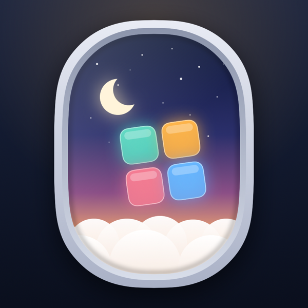
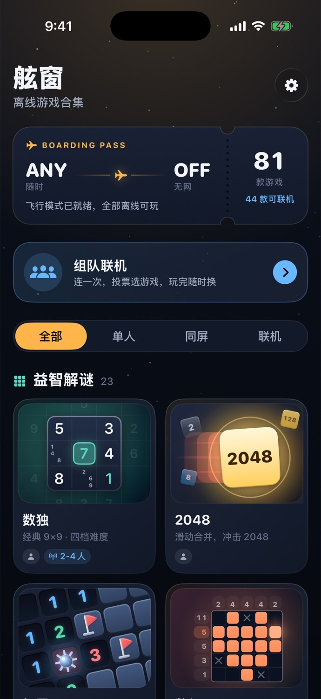
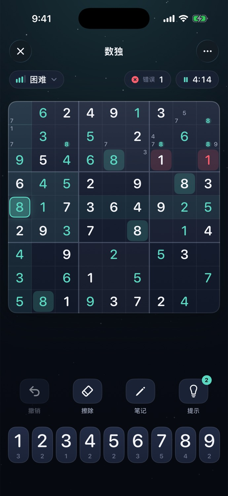
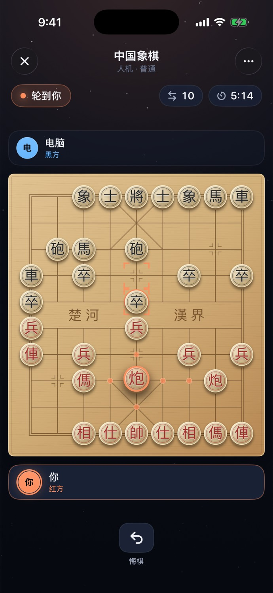
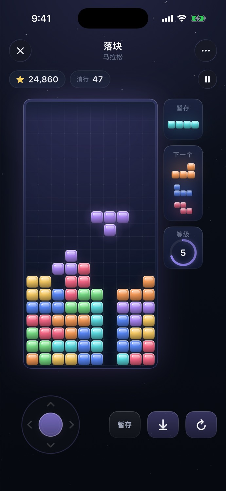
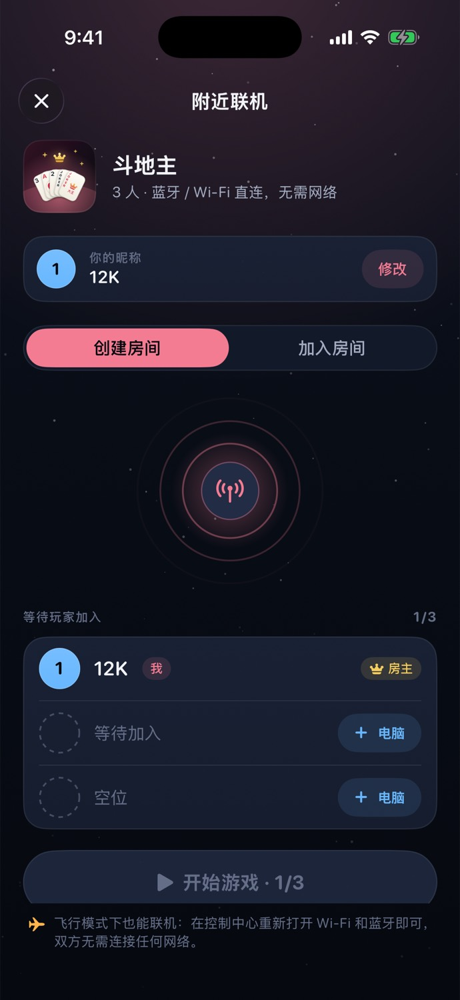

01 / 解谜
慢慢想，刚刚好
数独、2048、扫雷、数织、华容道。短短一局，也能沉浸很久。

舷窗 Window Seat为离线时光而作
起飞前、云层上、没有信号的山间。打开舷窗，让一局好游戏陪你度过属于自己的时间。
无需账号 无广告 无内购 离线可玩


随时开局
从熟悉的经典到轻巧的新挑战，按心情选一款。游戏的玩法和支持的对战模式各不相同。
01 / 解谜
数独、2048、扫雷、数织、华容道。短短一局，也能沉浸很久。

02 / 棋牌
中国象棋、五子棋、接龙、斗地主。独自练习，或和同行的人较量。

03 / 休闲
落块、贪吃蛇、海战棋、吹牛骰。想来一局的时候，立刻开玩。
就在身边
在支持附近联机的游戏里，用蓝牙或本地 Wi-Fi 连接身旁的设备。iPhone 与 Android 连上同一个 Wi-Fi 或热点，也能一起玩。没有互联网也能一起玩。也可以选择同屏轮流操作，或独自挑战电脑。
乘机时请遵守机组关于无线连接的要求。

安静而克制
游戏进度与偏好设置保存在本机。舷窗没有账号、广告、跟踪或应用内购买；附近联机仅在连接的设备之间传输对局数据。
阅读完整隐私政策